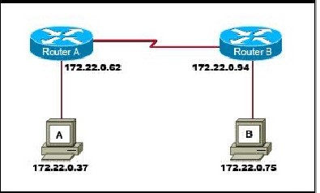
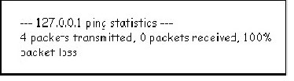
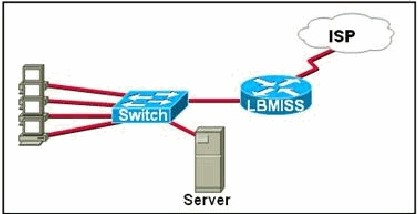
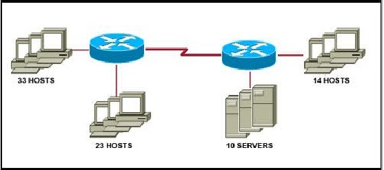
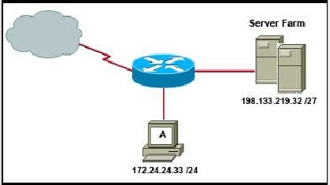
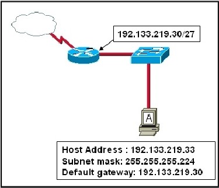

Chapter 6 – CCNA 1
01. Which IPv4 subnetted addresses represent valid host addresses? (Choose three.)
- 172.16.4.127 /26;
- 172.16.4.155 /26;
- 172.16.4.193 /26;
- 172.16.4.95 /27;
- 172.16.4.159 /27;
- 172.16.4.207 /27.
02. What subnet mask would a network administrator assign to a network address of 172.30.1.0 if it were possible to have up to 254 hosts?
- 255.255.0.0
- 255.255.255.0
- 255.255.254.0
- 255.255.248.0
03. A router interface has been assigned an IP address of 172.16.192.166 with a mask of 255.255.255.248. To which subnet does the IP address belong?
- 172.16.0.0
- 172.16.192.0
- 172.16.192.128
- 172.16.192.160
- 172.16.192.168
- 172.16.192.176
04. What is the primary reason for development of IPv6?
- security;
- header format simplification;
- expanded addressing capabilities;
- addressing simplification.
05. What is the network address of the host 172.25.67.99 /23 in binary?
- 10101100. 00011001.01000011.00000000;
- 10101100. 00011001.01000011.11111111;
- 10101100. 00011001.01000010.00000000;
- 10101100. 00011001.01000010.01100011;
- 10101100. 00010001.01000011. 01100010;
- 10101100. 00011001.00000000.00000000
06. What two things will happen if a router receives an ICMP packet which has a TTL value of 1 and the destination host is several hops away? (Choose two.)
- The router will discard the packet.
- The router will decrement the TTL value and forward the packet to the next router on the path to the destination host.
- The router will send a time exceeded message to the source host.
- The router will increment the TTL value and forward the packet to the next router on the path to the destination host.
- The router will send an ICMP Redirect Message to the source host.
07. Which three IP addresses are private? (Choose three.)
- 172.168.33.1
- 10.35.66.70
- 192.168.99.5
- 172.18.88.90
- 192.33.55.89
- 172.35.16.5
08. Which process do routers use to determine the subnet network address based upon a given IP address and subnet mask?
- binary adding;
- hexadecimal anding;
- binary division;
- binary multiplication;
- binary ANDing.
09. Given the IP address and subnet mask of 172.16.134.64 255.255.255.224, which of the following would describe this address?
- This is a useable host address.
- This is a broadcast address.
- This is a network address.
- This is not a valid address.
10. Refer to the exhibit. Which network prefix will work with the IP addressing scheme shown in the graphic.
{kind=link}
- /24
- /16
- /20
- /27
- /25
- /28
11.  Refer to the exhibit. Why would the response shown be displayed after issuing the command ping 127.0.0.1 on a PC?
{kind=link}
- The IP settings are not properly configured on the host.
- Internet Protocol is not properly installed on the host.
- There is a problem at the physical or data link layer.
- The default gateway device is not operating.
- A router on the path to the destination host has gone down.
12. What is a group of hosts called that have identical bit patterns in the high order bits of their addresses?
- an internet;
- a network;
- an octet;
- a radix.
13.  Refer to the exhibit. The network administrator has assigned the internetwork of LBMISS an address range of 192.168.10.0. This address range has been subnetted using a /29 mask. In order to accommodate a new building, the technician has decided to use the fifth subnet for configuring the new network (subnet zero is the first subnet). By company policies, the router interface is always assigned the first usable host address and the workgroup server is given the last usable host address. Which configuration should be entered into the workgroup server’s properties to allow connectivity to the network?
{kind=link}
- IP address: 192.168.10.38 subnet mask: 255.255.255.240 default gateway: 192.168.10.39
- IP address: 192.168.10.38 subnet mask: 255.255.255.240 default gateway: 192.168.10.33
- IP address: 192.168.10.38 subnet mask: 255.255.255.248 default gateway: 192.168.10.33
- IP address: 192.168.10.39 subnet mask: 255.255.255.248 default gateway: 192.168.10.31
- IP address: 192.168.10.254 subnet mask: 255.255.255.0 default gateway: 192.168.10.1
14.  Refer to the exhibit. A network administrator has to develop an IP addressing scheme that uses the 192.168.1.0 /24 address space. The network that contains the serial link has already been addressed out of a separate range. Each network will be allocated the same number of host addresses. Which network mask will be appropriate to address the remaining networks?
{kind=link}
- 255.255.255.248
- 255.255.255.224
- 255.255.255.192
- 255.255.255.240
- 255.255.255.128
- 255.255.255.252
15. What three facts are true about the network portion of an IPv4 address? (Choose three.)
- identifies an individual device;
- is identical for all hosts in a broadcast domain;
- is altered as packet is forwarded;
- varies in length;
- is used to forward packets;
- uses flat addressing.
16. Which statements are true regarding IP addressing? (Choose two.)
- NAT translates public addresses to private addresses destined for the Internet.
- Only one company is allowed to use a specific private network address space.
- Private addresses are blocked from public Internet by router.
- Network 172.32.0.0 is part of the private address space.
- IP address 127.0.0.1 can be used for a host to direct traffic to itself.
17. Which of the following network devices are recommended to be assigned static IP addresses? (Choose three.)
- LAN workstations;
- servers;
- network printers;
- routers;
- remote workstations;
- laptops.
18.  Refer to the exhibit. A network administrator discovers that host A is having trouble with Internet connectivity, but the server farm has full connectivity. In addition, host A has full connectivity to the server farm. What is a possible cause of this problem?
{kind=link}
- The router has an incorrect gateway.
- Host A has an overlapping network address.
- Host A has an incorrect default gateway configured.
- Host A has an incorrect subnet mask.
19. NAT is required for the host A network. 19.Which of the following are features of IPv6? (Choose three.)
- larger address space;
- faster routing protocols;
- data types and classes of service;
- authentication and encryption;
- improved host naming conventions;
- same addressing scheme as IPv4.
20. Refer to the exhibit. Host A is connected to the LAN, but it cannot get access to any resources on the Internet. The configuration of the host is shown in the exhibit. What could be the cause of the problem?
{kind=link}
- The host subnet mask is incorrect.
- The default gateway is a network address.
- The default gateway is a broadcast address.
- The default gateway is on a different subnet from the host.
21. How many bits make up an IPv4 address?
- 128
- 64
- 48
- 32